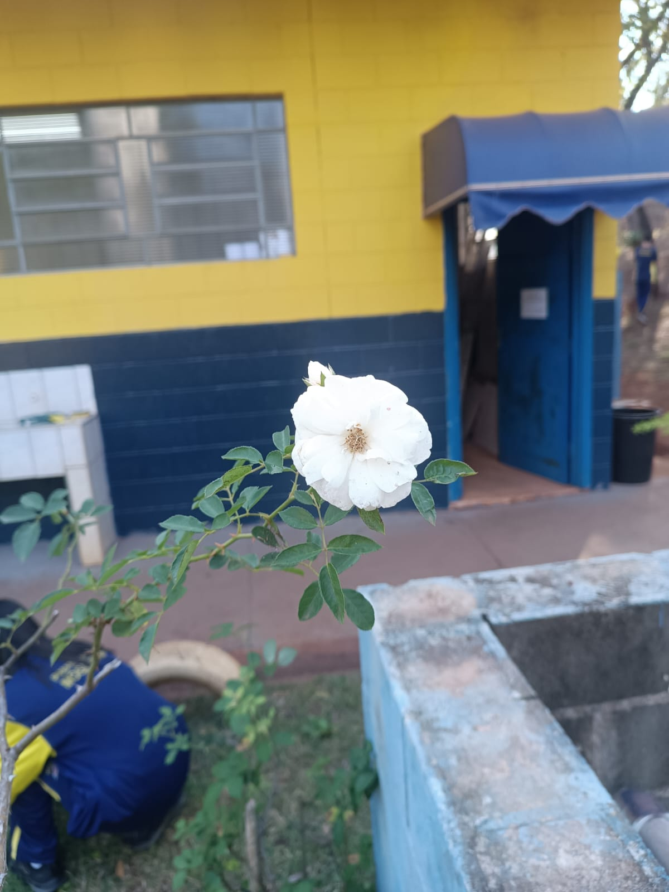

Informações da Planta
Nome científico: Rosa spp.
Nome popular: Rosa
Família: Rosaceae
Origem: Diversas regiões do mundo, cultivada em várias culturas.
Nome científico: Rosa spp.
Nome popular: Rosa
Família: Rosaceae
Origem: Diversas regiões do mundo, cultivada em várias culturas.
A rosa é um dos símbolos mais conhecidos de amor e carinho, frequentemente utilizada em buquês e decorações. Ela possui também importância cultural e medicinal em várias sociedades.